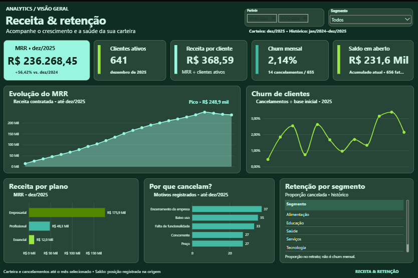

Crescimento com um sinal de atenção
O MRR cresceu 56,42% no comparativo anual. Ainda assim, dezembro ficou 5,09% abaixo do pico de setembro de 2025. O próximo passo é decompor ganhos e perdas de receita.
Uma análise da evolução da receita recorrente e dos fatores associados ao cancelamento de clientes, para orientar ações de retenção e crescimento em um negócio SaaS.
Explorar o dashboard ↓Ver o projeto no GitHub ↗Explore os filtros de período e segmento no relatório. Os indicadores acima são um retrato de dezembro de 2025 e não mudam com os filtros.
Se o relatório não carregar, abra diretamente no Power BI ↗. Em telas pequenas, a visualização em tela cheia facilita a leitura.
O MRR cresceu 56,42% no comparativo anual. Ainda assim, dezembro ficou 5,09% abaixo do pico de setembro de 2025. O próximo passo é decompor ganhos e perdas de receita.
A concentração no plano Empresarial justifica acompanhar a saúde das contas de maior receita e sua exposição a cancelamentos.
Baixo uso e falta de funcionalidade aparecem em 68 dos 159 cancelamentos registrados (42,77%). São pistas para investigar, entrevistar clientes e testar ações de retenção.
A empresa fictícia vende acesso mensal a um sistema para empresas de diferentes segmentos, com planos Essencial, Profissional e Empresarial. A base reúne 800 clientes e 10.153 registros de assinatura por competência, de janeiro de 2024 a dezembro de 2025.
O trabalho conecta indicadores de receita, carteira e cancelamento a hipóteses de ação: melhorar o onboarding, investigar lacunas de produto e acompanhar contas de maior MRR. As recomendações ainda precisam ser testadas.
Indicadores recalculados a partir da base padronizada e reconciliados com a captura fornecida. MRR representa valor contratado, não recebimento. Churn mensal é cancelamentos do mês divididos pela base inicial. Proporção histórica cancelada por segmento não equivale a churn mensal. Motivos declarados não demonstram causalidade.
Ler metodologia completa ↗